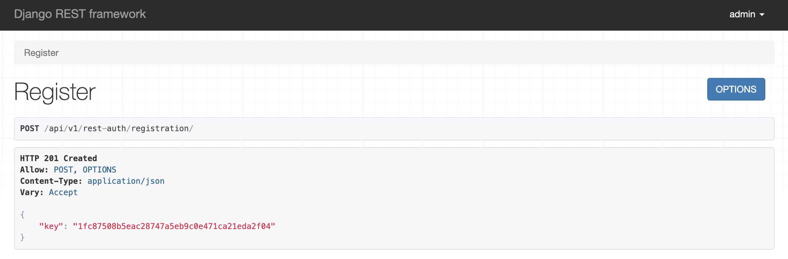

Django Rest Framework: Token Authentication
A version of the code for this iteration of Tweeter can be viewed on GitHub.
Django REST Framework comes with several built-in authentication solutions. Most APIs will use one of these authentication types:
- BasicAuthentication: each request is authenticated with a username and password. Basic authentication is inefficient and generally not used with production APIs.
- TokenAuthentication: users are assigned a complex token that is added to the header of each request. Token authentication is appropriate for client-server setups, such as native desktop and mobile clients.
- SessionAuthentication: uses Django’s default session backend for authentication. Appropriate for AJAX clients running in the same session as your web app.
For our tweeter app, we will use TokenAuthentication. This method is appropriate for most API authentication scenarios and is relatively easy to implement.
JSON Web Tokens
JSON Web Tokens (JWTs) are an enhanced standard for creating JSON-based access tokens. JWTs add the ability to add token expiration and can be generated through services such as Auth0. You can also encrypt JWTs for use over unsecured connections. JWTs are a nice, modern addition though they require additional configuration for use with the Django REST Framework.
Change DRF Default Authentication
By default, DRF uses BasicAuthentication and SessionAuthentication. As mentioned above we are going to use TokenAuthentication but we are also going to leave the SessionAuthentication because the Browsable API uses it.
To change the defaults, we need to update tweeter_app/settings.py. This chapter will modify tweeter_app/settings.py several times. While you may be tempted to make all of the changes at once, the order that certain changes are conducted matters because several of the configuration updates requires migrating the database.
# settings.py
...
INSTALLED_APPS = [
'django.contrib.admin',
'django.contrib.auth',
'django.contrib.contenttypes',
'django.contrib.sessions',
'django.contrib.messages',
'django.contrib.staticfiles',
'rest_framework',
'rest_framework.authtoken', # new
'bootstrap4',
'bootstrap_datepicker_plus',
'users',
'tweets',
'api',
]
...
Adding rest_framework.authtoken requires updating the database so let’s run a migration.
(tweeter_app) $ python manage.py makemigrations
(tweeter_app) $ python manage.py migrate
Update tweeter_app/settings.py again to explicitly designate TokenAuthentication and SessionAuthentication as the two methods of authenticating our API users. TokenAuthentication for the API and SessionAuthentication for the Browsable API interface.
# settings.py
...
REST_FRAMEWORK = {
'DEFAULT_PERMISSION_CLASSES': [
# 'rest_framework.permissions.AllowAny',
'rest_framework.permissions.IsAuthenticatedOrReadOnly',
],
'DEFAULT_AUTHENTICATION_CLASSES': [ # new
'rest_framework.authentication.TokenAuthentication', # new
'rest_framework.authentication.SessionAuthentication', # new
],
}
...
Django Rest Auth
Django Rest Auth providers a set of REST API endpoints to handle certain User Registration and Authentication tasks such as login, logout, password reset and confirmation. You can find more about it here: https://django-rest-auth.readthedocs.io/
Install via pipenv.
(tweeter_app) $ pipenv install django-rest-auth
Update our tweeter_app/settings.py.
# settings.py
...
INSTALLED_APPS = [
'django.contrib.admin',
'django.contrib.auth',
'django.contrib.contenttypes',
'django.contrib.sessions',
'django.contrib.messages',
'django.contrib.staticfiles',
'rest_framework',
'rest_framework.authtoken', # new
'rest_auth', # new
'bootstrap4',
'bootstrap_datepicker_plus',
'users',
'tweets',
'api',
]
...
Add the endpoints to tweeter_app/urls.py.
# tweeter_app/urls.py
from django.contrib import admin
from django.urls import path, include
urlpatterns = [
path('admin/', admin.site.urls),
path('', include('tweets.urls')),
path('users/', include('users.urls')),
path('api/v1/', include('api.urls')),
path('api-auth/', include('rest_framework.urls')),
path('api/v1/rest-auth/', include('rest_auth.urls')), # new
]
Update the database via migrations.
(tweeter_app) $ python manage.py makemigrations
(tweeter_app) $ python manage.py migrate
(tweeter_app) $ python manage.py runserver
You should now be able to run your development server and view the endpoints.
http://localhost:8000/api/v1/rest-auth/login/
http://localhost:8000/api/v1/rest-auth/logout/
http://localhost:8000/api/v1/rest-auth/password/reset
http://localhost:8000/api/v1/rest-auth/password/reset/confirm
Django Allauth
Allauth is an integrated set of Django applications addressing authentication, registration, account management as well as 3rd party (social) account authentication. You can find more about Allauth here.
Install via pipenv.
(tweeter_app) $ pipenv install django-allauth
Once again, update tweeter_app/settings.py
# settings.py
...
INSTALLED_APPS = [
'django.contrib.admin',
'django.contrib.auth',
'django.contrib.contenttypes',
'django.contrib.sessions',
'django.contrib.messages',
'django.contrib.staticfiles',
'django.contrib.sites', # new
'rest_framework',
'rest_framework.authtoken',
'allauth', # new
'allauth.account', # new
'allauth.socialaccount', # new
'rest_auth',
'rest_auth.registration', # new
'bootstrap4',
'bootstrap_datepicker_plus',
'users',
'tweets',
'api',
]
...
SITE_ID = 1 # new
...
Django comes with the ability to host multiple website from a single project. Since Allauth uses the “sites” framework, we need to specify a default website. Of course, we only have one so just set the SITE_ID = 1.
Migrate the database.
(tweeter_app) $ python manage.py migrate
Update tweeter_app/urls.py to add the new endpoints.
# tweeter_app/urls.py
from django.contrib import admin
from django.urls import path, include
urlpatterns = [
path('admin/', admin.site.urls),
path('', include('tweets.urls')),
path('users/', include('users.urls')),
path('api/v1/', include('api.urls')),
path('api-auth/', include('rest_framework.urls')),
path('api/v1/rest-auth/', include('rest_auth.urls')), # new
path('api/v1/rest-auth/registration/', include('rest_auth.registration.urls')), #new
]
Run the development server.
(tweeter_app) $ python manage.py runserver
You can see your user registration endpoint here http://localhost:8000/api/v1/rest-auth/registration/.
Try adding a new user. If everything is working correctly, it should return a user token to you. The client (mobile app, PWA, etc) would then include this token with all communications to identify this user.
